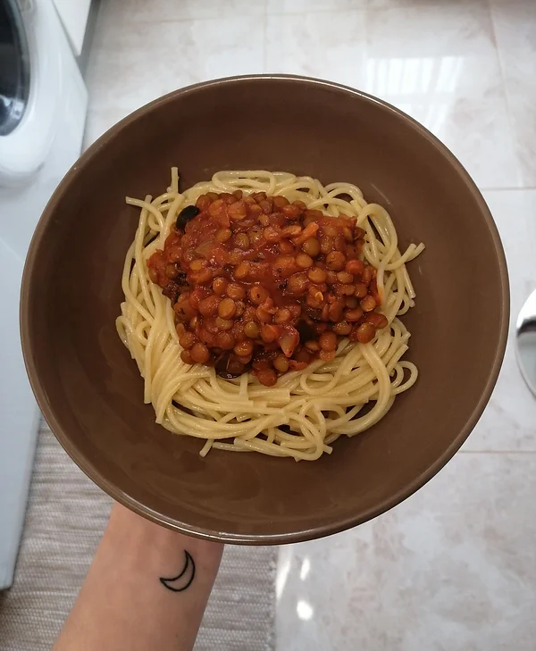

Massa à Bolonhesa de Lentilhas
Tempo de preparação
5min
Horas de Cozimento
15min
Tempo Total
20min
Porções
4

Ingredientes
Bolonhesa de Lentilhas:
- 1 chávena de lentilhas verdes
- ½ cebola picada
- 1 copo de polpa de tomate
- 7 azeitonas cortadas aos pedacinhos
- sal q.b
- azeite q.b
- pimenta preta q.b
- alho em pó q.b
- pimentão doce q.b
- manjericão fresco/seco q.b
Massa esparguete branca:
- massa esparguete q.b
- sal q.b
- azeite q.b
- 1 folha de loureiro
Instruções
- Coloque as lentilhas verdes de molho na noite anterior, para depois ser mais fácil de as confeccionar.
- Comece a preparar a massa esparguete branca quando colocar a polpa de tomate e a água na bolonhesa. (mais informações ao correr da receita)
Bolonhesa de lentilhas:
- Numa panela, refogue a cebola picada num fio de azeite até ficar levemente dourada. Acrescente as lentilhas, tempere com uma pitada de sal e refogue por mais 5 minutos.
- Adicione a polpa de tomate, um bocadinho de água, e tempere com pimenta preta, alho em pó, pimentão doce e manjericão, mexendo de vez em quando para não queimar. Junte também as azeitonas picadas ao preparado.
Massa esparguete branca:
- Numa panela com água, junte a esparguete de sua preferência, tempere com sal, um fio de azeite e uma folha de loureiro. Deixe cozer até ficar al dente e está pronto a acompanhar com a bolonhesa de lentilhas!